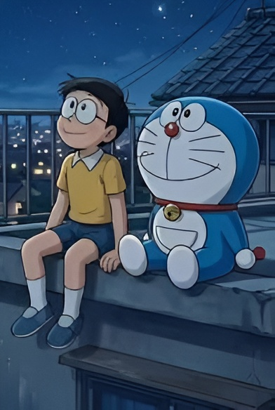
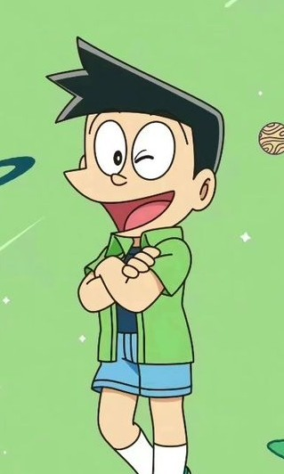
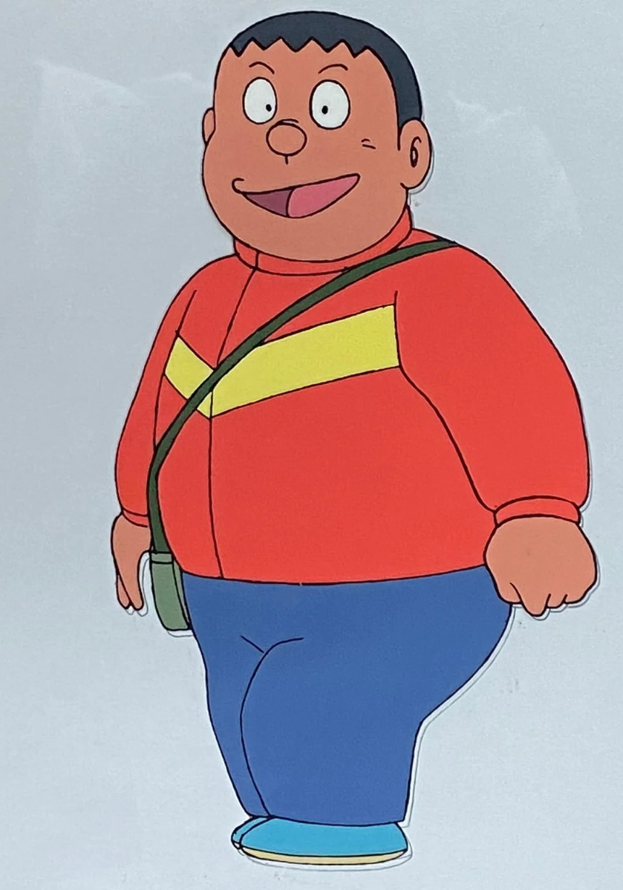
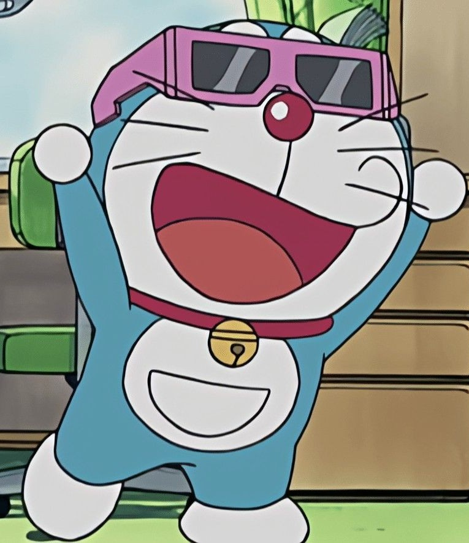
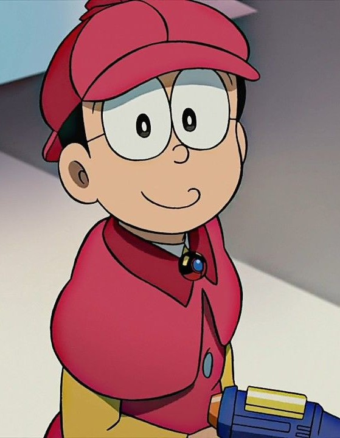
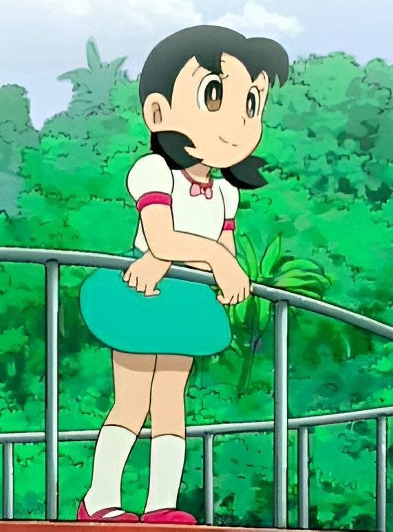

Doraemon is a Japanese manga series written and illustrated by Fujiko F. Fujio. First serialized in 1969, the manga's chapters were collected in 45 volumes published by Shogakukan from 1974 to 1996. The story revolves around an earless robotic cat named Doraemon, who travels back in time from the 22nd century to assist a boy named Nobita Nobi in his day-to-day life.

Suneo Honekawa

Takeshi Goda

Doraemon

Nobita Nobi

Shizuka Minamoto